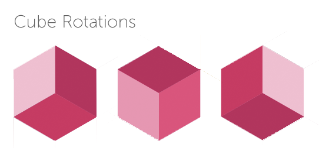

Design Challenge
Illusion Études
Exploring Obscure Interactions from Sketch to Web
UXWeb
OVERVIEW
Context
Design challenge given by Wonderland Design | 2016
Task
Turn two sketches into 'surprising' interactive experiences.
Process
Exploratory sketching/brainstorming > Tools Research > Prototypes > Usability > Iteration > Implementation
Contribution
I designed and coded both concepts for the sketches given in 4 days.
Tools
HTML, CSS, JS, D3.js, Google Colors
Sketch #1 & #2 to convert into creative interactions.
#1: AT A GLANCE
DESCRIPTION
Goal
Tease out the not so obvious interaction of a common optical illusion hidden in the sketch.
Look & Feel
Offbeat, energetic, Escherian
Interaction
On mouse over, cubes rotate around x-axis, on cursor location cubes rotate around z-axes (imitating light source), on contiguous roll-over the background color shifts to a 'mix' of hues as if painting.
Approach
In general I aimed for an overall approach illustrating what is not necessarily obvious about these graphics. Starting from two simple sketches sent to me I began by whittling them down to their basic elements and buildng them up in terms of how they might be coded and interacted with to inspire delight.
The Escher cubes can be thought of as layers of thought, that hexagonal coordinates can be found by rotating a cube, that the graphic exists in three dimensions, sparkled with my own idea that Escher, who has challenged our perspective, might also challenge our sense of color (since pixels can also be in hex).
Cube Rotations by mouse position within hexagons
#2: AT A GLANCE
DESCRIPTION
Goal
Illuminate the hidden geometry of the ray circles that were clipped to create the sketch, and add an extra layer of interaction on top of the obvious nyquist frequency illustion in the graphic.
Look & Feel
Colorful & Illuminating
Interaction
The interaction starts on rollover to change complementary colors, and after a threshold of ray-shifts, respective discs rotate causing interferance affordance of illusion.
Approach
Interfering circles: After being sent the sketch, and taking it apart visually, I discerned that the circles were partitions of larger circles of rays. To illustrate the 'obscured' theme, I decided to illustrate the invisible lines making up the image-- to show how something that might seem complex is actually part of a simple figure. Next I aimed to have the partitions demonstrate their interference in rotation (added bonus with complimentary colors crossing one another).
I approached the graphics with simplicity in mind and interactive surprise. My first two prototypes used microphone input and force directed layouts, and then I whittled them down to their basic concept.